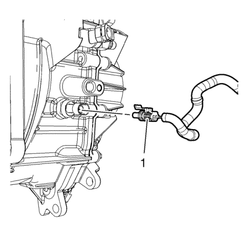
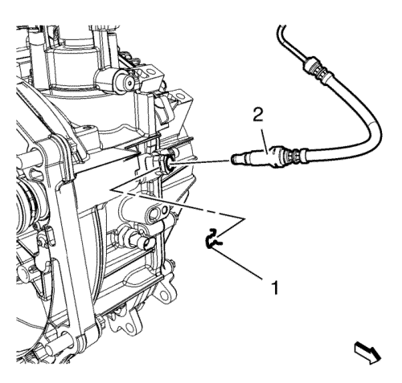
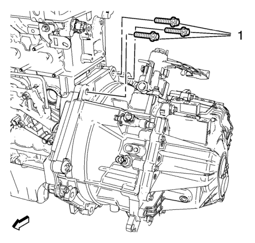
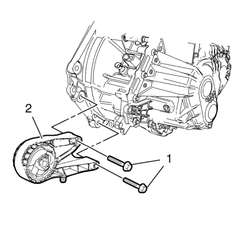
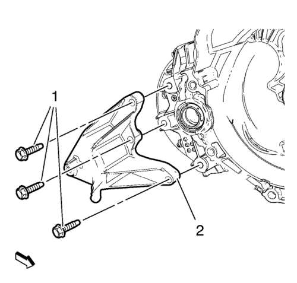
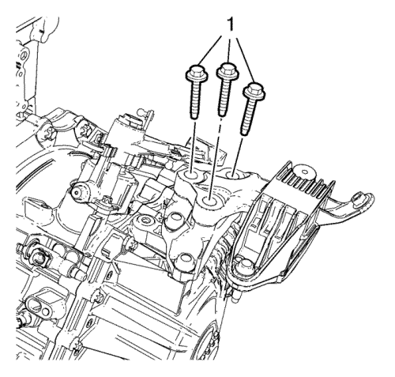
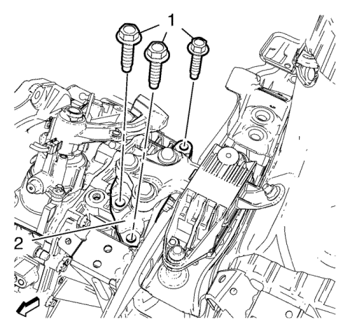
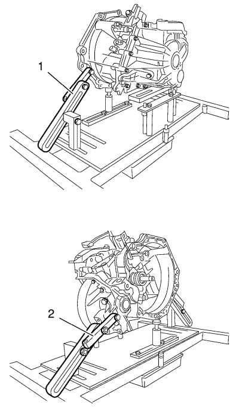
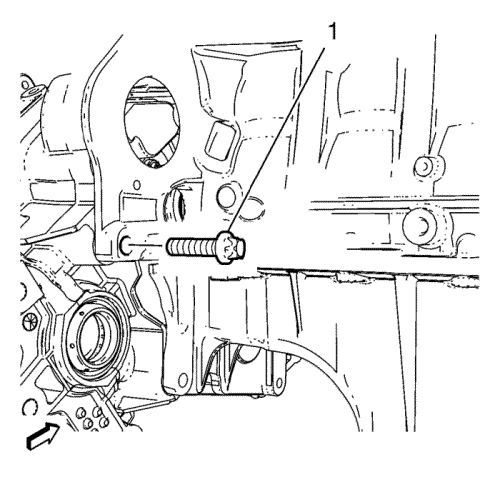

- Desmonte la bandeja de la batería. Consultar Sustitución de la bandeja de la batería .

Nota: NO desconecte los tubos flexibles del refrigerante del motor.
- Desmonte el clip del depósito de expansión del radiador (2).
- Desmonte el depósito de expansión del radiador (1).
- Desmonte el cable de la palanca del cambio de la caja de cambio. Consultar Sustitución del cable de la palanca del cambio manual y de la palanca selectora .

- Desemborne el conector eléctrico (1) del interruptor de la luz de marcha atrás .

Nota: Antes de desconectar el tubo delantero del actuador del embrague, retire el líquido de embrague/frenos del depósito. Coloque debajo un recipiente.
- Quite el seguro del tubo delantero del cilindro actuador del embrague (1).
- Desconecte el tubo delantero del cilindro actuador del embrague (2) del codo del tubo del cilindro actuador del embrague.

- Desmonte los 3 pernos superiores de la caja de cambio del motor (1).
- Elevar el vehículo y soportarlo de manera segura. Consultar Elevación del vehículo con un gato .
- Monte la herramienta de soporte del motor CH-49290; para la instalación utilice el manual de montaje que se adjunta.
- Desmonte el bastidor de la suspensión delantera y del tren de rodaje. Consultar Sustitución del bastidor de la suspensión delantera y del tren de rodaje .

- Extraiga el soporte delantero de la caja de cambio de la caja de cambio (2). Desmonte los 2 tornillos (1).

- Desmonte los pernos del alojamiento trasero de la caja de cambio (1) y el soporte trasero de alojamiento de la caja de cambio (2).
- Vacíe el aceite del cambio. Consultar Inspección del nivel del aceite del cambio .
- Desconecte el semieje de la rueda delantera izquierda de la caja de cambios. Consultar Sustitución del semieje de la rueda delantera - lado izquierdo .
- Desmonte el árbol intermedio de accionamiento de las ruedas delanteras. Consultar Sustitución del semieje intermedio de la rueda delantera .
- Bajar el vehículo.
- Monte el dispositivo de soporte del motor EN-47649.
Para 1.4L LUJ, consulte Dispositivo de soporte del motor .
Para 1.6L LLU, consulte Dispositivo de soporte del motor .

- Desmonte y DESECHE los pernos del alojamiento del cambio (1) del soporte del alojamiento del cambio.
- Baje el motor y la caja de cambios del lado izquierdo con el dispositivo de soporte del motor EN-47649.

- Desmonte el soporte del alojamiento de la caja de cambio - lateral izquierdo de la caja de cambio (2). Desmonte los 3 pernos de soporte del montaje de la caja de cambios (1).
- Elevar el vehículo
- Desmonte los 4 pernos inferiores de la caja de cambio (1)
- Desmonte el perno inferior de la caja de cambio y la tuerca (2).
Precaución: Consulte Precaución con las fijaciones en la sección Prólogo
- Monte el NUEVO tapón de drenaje de aceite y apriételo a 20 N·m 15 (lib. pie).

- Coloque el soporte del cambio DT-47648 en el bastidor base CH-904 y premonte los soportes como se muestra en la ilustración.
- Premonte el soporte de la carcasa del embrague DT-47648-2 (4) en la posición 2 sobre la placa base.
- Premonte el soporte de la carcasa del cambio DT-47648-4 (2) en posición 14 sobre la placa base.
- Premonte el soporte DT-47648-5 izquierdo con brazo giratorio de cambio trasero (1) en posición A sobre la placa base.
- Premonte el soporte DT-47648-5 derecho con brazo giratorio de cambio frontal (3) en posición F sobre la placa base.

Nota: Antes de colocarlas en posición, afloje todas las uniones atornilladas de los brazos giratorios y soportes de la placa base. Ajuste los soportes para la carcasa del convertidor y la carcasa del cambio con los husillos hasta que estén lo más bajos posible.
- Acople el soporte del cambio DT-47648 a la caja de cambios.
- Alinee el soporte del cambio DT-47648 debajo de la caja de cambios.
- Acople los brazos giratorios (1, 2) a la caja de cambios.
Nota: Alinee los brazos giratorios de modo que se cree el mínimo apalancamiento posible.
- Apriete las uniones atornilladas de los brazos giratorios, empezando por la caja de cambios y alcanzando la placa base.
- Posicione los soportes para la carcasa del embrague y la carcasa del cambio en la caja de cambios girando hacia arriba los husillos.
- Apriete las uniones atornilladas de los soportes.

- Desmonte los últimos perno inferiores de la transmisión (1).
- Separe la caja de cambios del motor.
- Baje la caja de cambios con el gato del cambio y el soporte del cambio DT-47648 lo suficiente como para extraer la caja de cambios.